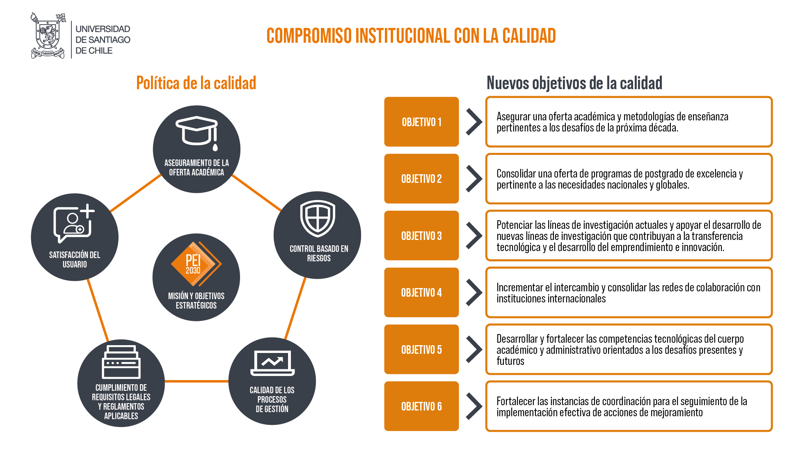

Historia
La Secretaría General se remonta a los inicios de la Escuela de Artes y Oficios en 1849, como una forma de entregar soporte administrativo a las distintas actividades realizadas dentro de la institución. Desde estos albores y durante muchos años, la Secretaría General ha evolucionado y se ha adaptado a las distintas necesidades de cada momento histórico, siendo la segunda unidad más antiguas de la Universidad de Santiago de Chile.
Hoy la Secretaría General es una Unidad Mayor, a cargo de un directivo o una directiva superior, el Secretario o la Secretaria General que, a través de sus dependencias, presta servicios de asesoría jurídica, administrativa, disciplinaria e informativa a la comunidad universitaria, da fe de los actos académicos y administrativos, custodia y gestiona los registros y archivos que contienen la vida institucional y, en términos amplios, está al servicio de toda la comunidad universitaria para apoyar en los procesos y cambios institucionales.
El Secretario o la Secretaria General cumple la función de ser el ministro o la ministra de fe de la Universidad, mediante la emisión de certificados de diversa naturaleza y la autorización de documentos institucionales. Además, preside el Consejo de Honores y Distinciones de la Universidad, y tiene a su cargo la Secretaría del Consejo Académico, así como las materias sobre acceso a la información pública, de declaraciones de intereses y patrimonio y es la contraparte de diversas instituciones de fiscalización y control.
SECRETARIA GENERAL
Funciones:
La Secretaría General de la Universidad de Santiago de Chile es una Unidad Mayor de asesoría y gestión del Gobierno Universitario, que certifica la validez de los actos institucionales tanto académicos como administrativos, de acuerdo al marco normativo vigente. Para llevar a cabo sus labores cuenta con las competencias y destrezas de un equipo humano idóneo, que presta servicios de asesoría jurídica y disciplinaria, ejecución administrativa e informativa, y que tiene la custodia de los registros y archivos que contienen la vida institucional, brindando con todo esto soporte jurídico y administrativo a la gestión universitaria.

Sandra Barrera de Proença
Secretaria General
Miriam Avendaño Celis
Encargada Administrativa

Loreto Malebrán Rivera
Encargada Administrativa y Ministra de Fe
Misión y Visión
Misión:
La Secretaría General de la Universidad de Santiago de Chile es una Unidad Mayor de asesoría y gestión del Gobierno Universitario, que certifica la validez de los actos institucionales tanto académicos como administrativos, de acuerdo al marco normativo vigente. Para llevar a cabo sus labores cuenta con las competencias y destrezas de un equipo humano idóneo, que presta servicios de asesoría jurídica y disciplinaria, ejecución administrativa e informativa, y que tiene la custodia de los registros y archivos que contienen la vida institucional, brindando con todo esto soporte jurídico y administrativo a la gestión universitaria.
Visión:
La Secretaría General se adscribe a una comunidad universitaria que se proyecta como referente nacional e internacional de la educación superior, en el marco de las humanidades, el desarrollo científico tecnológico y social de vanguardia, siendo reconocida por su excelencia, y promoción de la equidad social, inclusión y pluralismo, al servicio de las necesidades del país y de la construcción de una sociedad democrática, equitativa y sostenible a nivel global.
Política de la Calidad:
La Secretaría General de la Universidad de Santiago de Chile trabaja con un sistema de aseguramiento de la calidad, establecida en su Política de Calidad, mediante la Resolución 1047 de 2020.
Organigrama
Secretaría General
La Secretaría General está a cargo de una Secretaria General que es la ministra de fe de la Universidad, y ejerce la tuición sobre todos los registros, archivos y actos administrativos que emanen de esta institución de educación superior.
Para el cumplimiento de sus funciones la Secretaría General cuenta con tres direcciones: Dirección Jurídica; Dirección de Promoción del Cumplimiento; Dirección de Información y Gestión Documental. En el mismo orden se produce su subrogación.